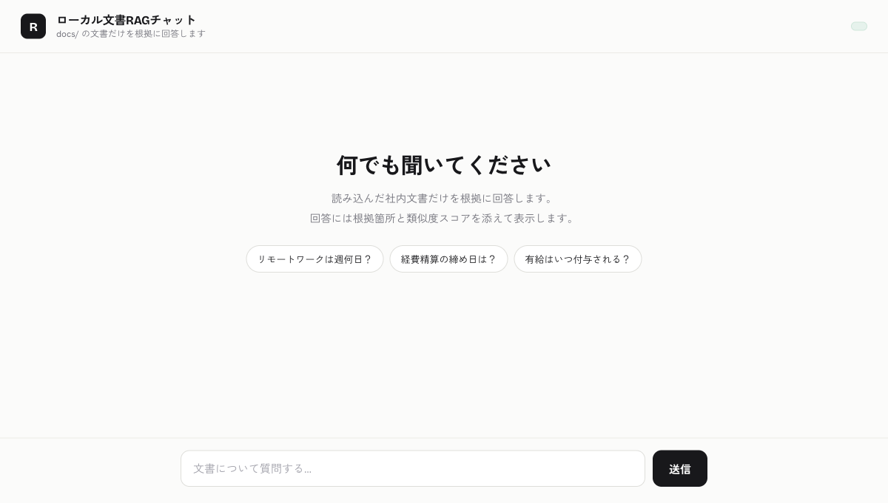
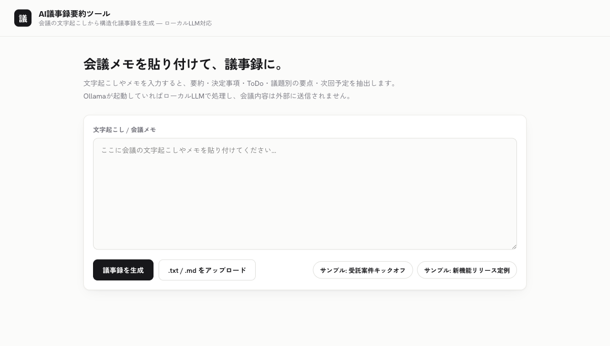
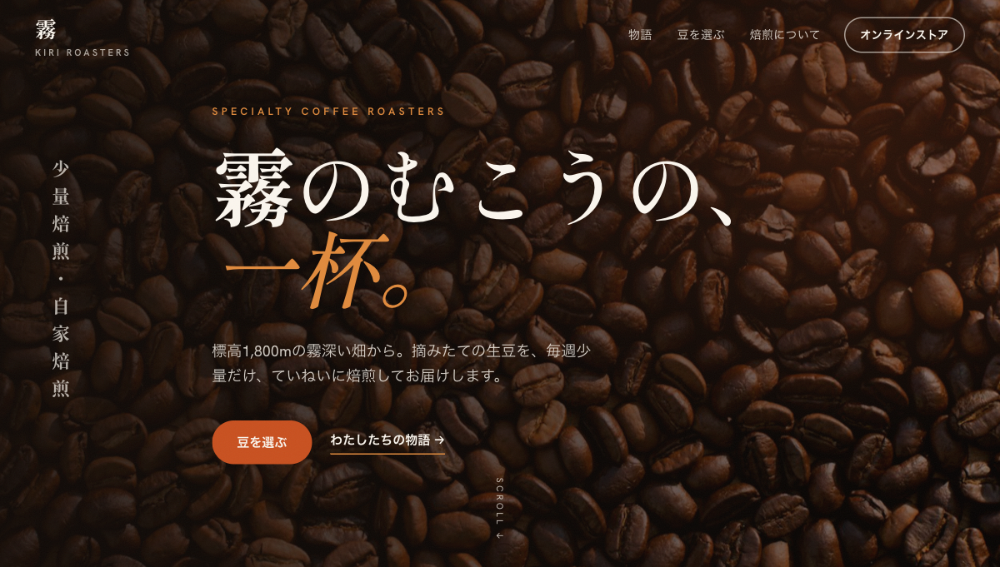
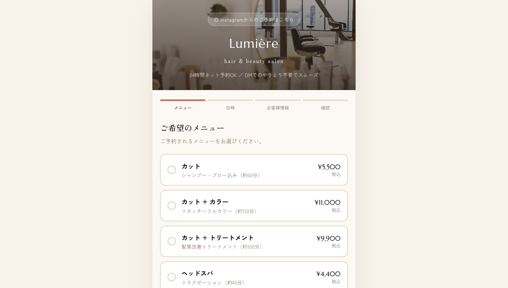

Work
制作物
すべて実際に動作し、テスト・CI・型安全を備えています。AI・業務自動化・社内ツールの3領域をカバー。




すべて実際に動作し、テスト・CI・型安全を備えています。AI・業務自動化・社内ツールの3領域をカバー。




RAG（社内文書Q&A）、チャットボット、文書からの情報抽出。要件に合わせてローカル/クラウドのLLMを選定します。
CSV/Excelの集計、定型作業のスクリプト化、レポート自動生成。手作業を仕組みに置き換えます。
問い合わせ・在庫・顧客管理などのWebアプリを、フロントからAPIまで一貫して構築します。
機密データを外部に出さないローカル完結の構成、入力バリデーション、型安全な実装で安心して使える品質に。